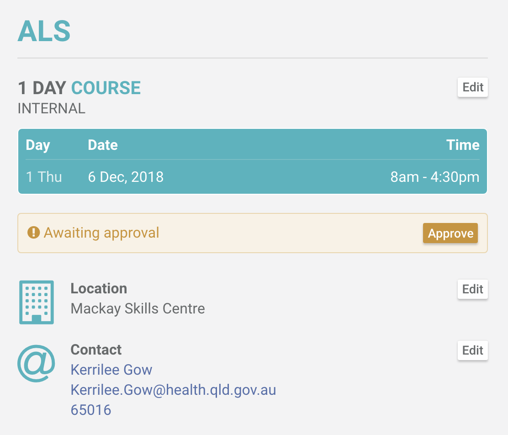
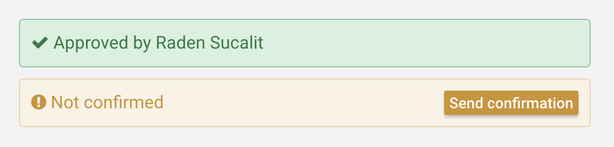
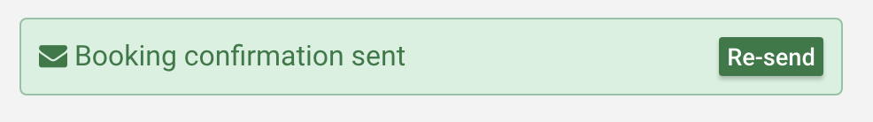

All bookings start as Awaiting approval in the system. This allows another staff to verify the details of the booking and subsequently approve it.
NOTE: A booking has to be approved so a confirmation email can be sent to the booking contact.
Once a booking is approved, a confirmation email can be sent to the booking contact.
If the details of the booking changes, you can always re-send a confirmation email to the booking contact.
